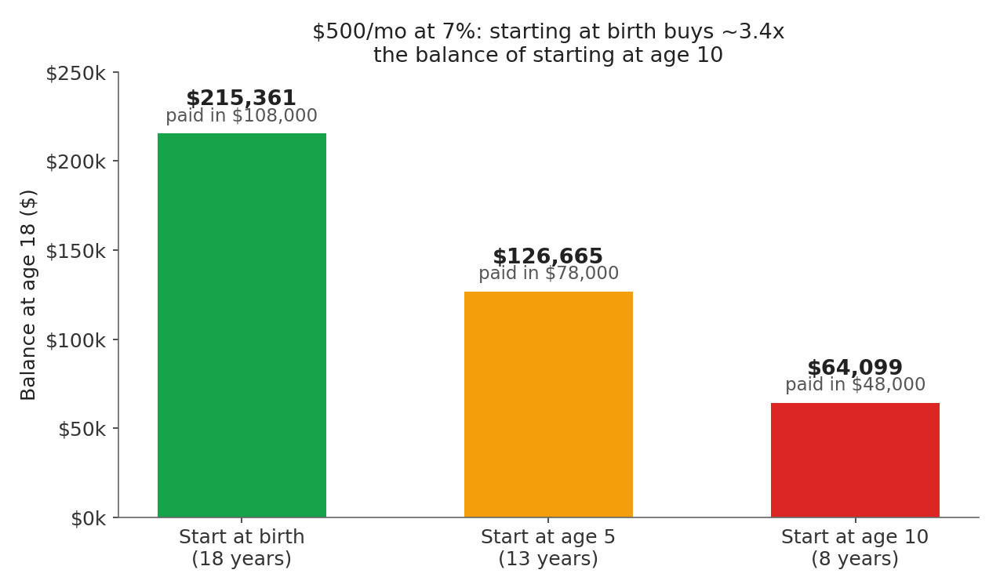
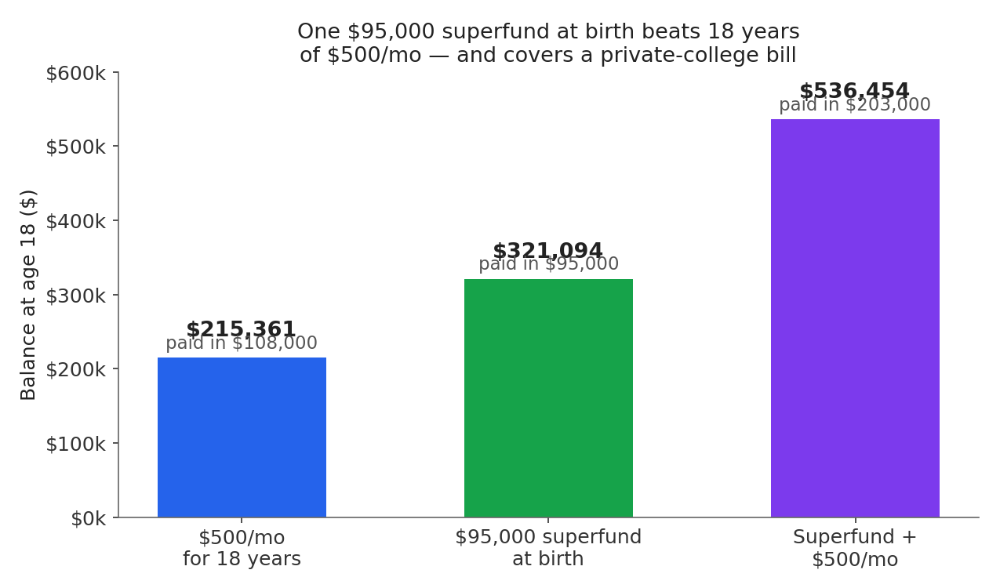
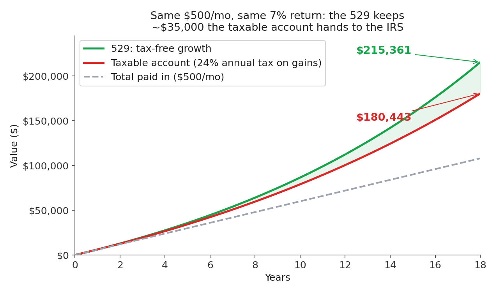

Your kid is two. College is 16 years away — and four years at a private university already costs ~$262,000. The question every H-1B parent asks before opening a 529 is the same one: what if we leave the US before college? It is the right question. And the answer is the reason this account is worth opening anyway: the money is not trapped. It follows the kid to a foreign university, to a sibling, to a Roth IRA — or, worst case, back to you minus tax and a penalty on the growth only. This post is the full picture: what a 529 costs, what it pays for in 2026, and every exit ramp if the plan changes.
All figures are current as of November 2026: College Board's Trends in College Pricing 2025 (2025–26 academic year), IRS gift-tax and IRA limits for 2026, and the Internal Revenue Code as in force for 2026, including the One Big Beautiful Bill Act changes effective January 1, 2026.
What a 529 actually is
A 529 is a state-sponsored investment account for education. You contribute after-tax dollars, the money grows tax-deferred, and withdrawals for qualified education expenses come out completely tax-free — no federal tax, and in California no state tax either. There is no federal deduction for contributions, and there are no income limits: a household earning $500,000 contributes on the same terms as one earning $50,000.
Two features matter more than the tax treatment for H-1B parents:
- You keep control. The account owner — you — owns the money, not the child. Unlike a custodial UTMA/UGMA account, which becomes the child's property at adulthood, a 529 stays yours to direct. You decide when and how it is spent, and you can change the beneficiary later.
- Anyone can contribute. Parents, grandparents in India, relatives, friends. Contributions count as gifts for tax purposes, which is where the limits below come in.
The price tag you are saving toward
College Board's 2025–26 numbers, per year:
| Tuition & fees | Room & board | Total budget | |
|---|---|---|---|
| Public 4-year, in-state | $11,950 | $13,900 | ~$30,000 |
| Private nonprofit 4-year | $45,000 | $15,920 | $65,470 |
Four years: roughly $120,000 all-in at a public university, ~$262,000 at a private one — before any inflation over the next 16 years. At a 7% average return, the monthly savings needed to hit those targets by age 18 is ~$279 a month for public, ~$608 a month for private. Those are the numbers to anchor on; everything below is about getting there cheapest.
The cost of waiting
Compounding does the heavy lifting, and it charges rent for every year you delay. Same $500 a month, same 7% return, different start dates:

Starting at birth buys ~3.4x the balance of starting at age 10 — $215,361 versus $64,099 — on only $60,000 more paid in. Waiting five years costs ~$89,000 of ending balance; waiting ten costs ~$151,000. The single most expensive sentence in college saving is "we'll start when the kid is older." The second most expensive is "we'll start after the green card."
Superfunding: the $95,000 move
The annual gift-tax exclusion for 2026 is $19,000 per person, per beneficiary — so a couple can put $38,000 a year into each child's 529 with no gift-tax paperwork. But 529s have a trick no other account has: the five-year election. One donor can contribute five years' worth at once — $95,000 per child ($190,000 for a couple) — and elect on Form 709 to treat it as five annual $19,000 gifts. No gift tax, no lifetime-exemption use, as long as you make no further gifts to that beneficiary during the five years.
What that buys: $95,000 invested at birth at 7% is $321,094 by age 18 — more than the entire four-year private bill, from a single deposit. Add $500 a month on top and you reach $536,454.

Superfunding only makes sense if the money is genuinely spare — it locks $95,000 into an education account on day one, and the five-year election means no further gifts to that child without gift-tax consequences. It is the right move for a household with a funded emergency account and maxed retirement accounts, not the first move for a household still building either. And note the ceiling: California's ScholarShare 529 caps aggregate contributions at $529,000 per beneficiary, so a superfund plus 18 years of contributions can bump into the cap — check the balance before adding more.
The California catch: no state deduction — the value is federal only
Here is the pitch you will hear that does not apply to you: "contribute and deduct it from your state taxes." Forty states plus D.C. offer a 529 deduction or credit. California is not one of them. ScholarShare 529 gives no state income-tax deduction or credit for contributions, and neither does the federal government. A bill to create one (AB 2444) is stuck in committee and changes nothing for 2026.
So the entire value of the 529 for a California H-1B household is the federal tax-free growth — and that alone is worth real money. Same $500 a month, same 7% return, 18 years:

The taxable account — taxed annually at 24% on its gains, an illustrative rate for a high earner — ends at $180,443. The 529 ends at $215,361. The difference, ~$35,000, is the tax drag you avoided. The real drag depends on your bracket and how often the taxable account turns over its holdings; a buy-and-hold index fund in taxable does better than this illustration, and an account full of distributions does worse. But the direction never changes: the 529 wins by the amount of tax it never pays.
What it pays for in 2026
Qualified expenses — withdrawals tax-free — now cover more than they did a year ago. The One Big Beautiful Bill Act, effective January 1, 2026:
- College: tuition, fees, room and board (at least half-time enrollment), books, supplies, computers and related equipment.
- K–12: up to $20,000 per beneficiary per year, doubled from $10,000 — and now covering not just tuition but books, tutoring, testing fees, dual-enrollment fees, and certain educational therapies.
- Career training: postsecondary credential programs, apprenticeships, and licensing — a real option if your child goes the trade or certification route instead of a four-year degree.
- Student loans: up to $10,000 lifetime per beneficiary (plus $10,000 per sibling) for qualified education loan repayment.
The default investment choice in most plans, including ScholarShare, is an age-based portfolio that starts aggressive and de-risks automatically as the child approaches 18. It is the right default for most parents: set the contribution, pick the age-based option, and stop thinking about it.
The H-1B question: what if we leave before college?
This is where most parents stall — and where the 529 is better than its reputation. Four exit ramps, in order of preference:
1. The child studies abroad. 529 funds work at eligible foreign institutions — hundreds of schools outside the US are on the federal eligible list, mostly in the UK, Canada, Australia, and Europe. Before assuming a specific university qualifies, check the federal FAFSA eligible-school list: not every foreign university is on it, and an ineligible school means the withdrawal is non-qualified. If the school qualifies, the money works exactly as it would at a US college.
2. Change the beneficiary. You can move the money to another member of the family — a sibling, a spouse, yourself, a future grandchild — with no tax consequences. The account does not die with the original plan. For a two-child household, an overfunded older sibling's 529 is simply the younger sibling's college fund.
3. Roll it into a Roth IRA. Since 2024, SECURE 2.0 lets the beneficiary roll up to $35,000 lifetime from a 529 into their own Roth IRA, tax- and penalty-free. The rules are strict: the 529 must have been open 15+ years, the money being rolled must have sat in the account 5+ years, the annual rollover cannot exceed that year's IRA contribution limit ($7,500 for 2026), the beneficiary needs earned income at least equal to the rollover, and the transfer must go trustee-to-trustee. Notably, the usual Roth IRA income limits do not apply to these rollovers. Open the 529 at birth and the 15-year clock is already satisfied by the time the child is working — the $35,000 becomes their retirement head start.
4. Take the money back. A non-qualified withdrawal costs income tax plus a 10% federal penalty on the earnings only — plus a 2.5% California penalty on the earnings. Your contributions come back tax-free; only the growth is hit. On a $215,361 balance built from $108,000 of contributions, the penalty applies to the ~$107,000 of earnings. It is a bad outcome, not a catastrophe — and it is the worst case, not the likely one.
Two more H-1B-specific details:
- Grandparents in India can fund it. Anyone can contribute to a 529, and cash gifts from nonresident aliens are generally not subject to US gift tax — but the rules for cross-border gifts have traps, so confirm the treatment with a CPA before a large transfer from abroad.
- Financial aid treats it kindly. A parent-owned 529 counts as a parental asset on the FAFSA, assessed at most 5.64% — the lowest rate in the formula. And since the FAFSA simplification, distributions from a grandparent-owned 529 are no longer reported as student income at all, which used to be the reason to keep grandparents' money out of the picture.
And if the child earns a scholarship, you can withdraw up to the scholarship amount penalty-free — income tax on the earnings still applies, but the 10% penalty does not. A scholarship is not a reason the money is wasted; it is a reason some of it comes back.
What not to do
- Don't wait for the green card. The 529 works the same on an H-1B as on a green card, and every year of delay costs roughly $89,000 of ending balance on a $500-a-month plan. The visa question is about exit ramps, not about whether to start.
- Don't overfund past the target. A 529 that ends up far larger than college costs leaves you choosing between a beneficiary change, a slow $35,000 Roth rollover, or a penalized withdrawal. Size it to the public-university number unless private is the real plan, then stop and let compounding work.
- Don't fund the 529 before the emergency fund and the 401(k). A 529 is the third bucket, not the first. A layoff on an H-1B comes with a 60-day clock — money locked in a college account does not pay rent during a job search. Fund the layoff buffer first, capture the full employer 401(k) match second, then open the 529.
- Don't expect a California tax break. There is none in 2026. If someone sells you a 529 on the state deduction, they are selling another state's plan — or they are wrong.
- Don't put it in the child's name. A custodial UTMA/UGMA account becomes the child's money at adulthood, counts more heavily against financial aid, and has no education tax break. The 529's owner-control is the point.
- Don't superfund money you might need back. The five-year election locks the gift in. Superfund only with money you are certain is spare.
- Don't assume the foreign university qualifies. Check the FAFSA eligible-school list before counting on tax-free withdrawals abroad. An ineligible school turns a qualified plan into a penalized withdrawal.
Takeaways
- Four years of college costs ~$120,000 all-in at a public university, ~$262,000 at a private one (College Board 2025–26). At 7%, that takes ~$279 a month for public, ~$608 a month for private, saved from birth.
- Starting at birth beats starting at age 10 by ~3.4x on the same $500 a month: $215,361 versus $64,099.
- In 2026 you can gift $19,000 per person per beneficiary ($38,000 per couple), or superfund $95,000 ($190,000 per couple) in one shot with the five-year election on Form 709. One $95,000 superfund at birth grows to ~$321,000 by age 18.
- California gives no state tax deduction for 529 contributions. The value is federal tax-free growth — worth ~$35,000 over 18 years on $500 a month versus a taxable account.
- From 2026, K–12 withdrawals are allowed up to $20,000 a year, and credential and apprenticeship programs qualify too.
- If the family leaves the US, the money still works: at eligible foreign schools, by changing the beneficiary, or by rolling up to $35,000 into the beneficiary's Roth IRA (account 15+ years old, $7,500 a year cap in 2026). The worst case is a non-qualified withdrawal — tax plus a 10% penalty on the earnings only.
- Fund the layoff buffer and the 401(k) match first. Then open the 529, pick the age-based portfolio, automate the contribution, and stop thinking about it.
This post is for education only — not tax, legal, or investment advice. Immigration questions need an immigration attorney.
Sources: College Board, "Trends in College Pricing and Student Aid 2025" (2025–26: public four-year in-state tuition and fees $11,950; private nonprofit four-year $45,000; average total budgets $21,320–$65,470); UBS, "529 College Savings FAQ" (October 2026: 2026 annual exclusion $19,000; superfunding $95,000/$190,000; K–12 limit $20,000 from 2026; 529-to-Roth $35,000 lifetime); SmartAsset, "How to Convert a 529 Plan to a Roth IRA" (2026 IRA limit $7,500; 15-year and 5-year rules; no MAGI limit); NerdWallet, "529 Plans by State" (July 2026: California ScholarShare 529, no state tax benefit; $529,000 aggregate limit); SmartAsset, "What Are the Tax Benefits of a 529 Plan in California?"; MassMutual, "529 Roth IRA rollover: rules, limits, and eligibility" (OBBBA K–12 expansion to $20,000 from 2026); IRS Publication 590-A; IRC §529.